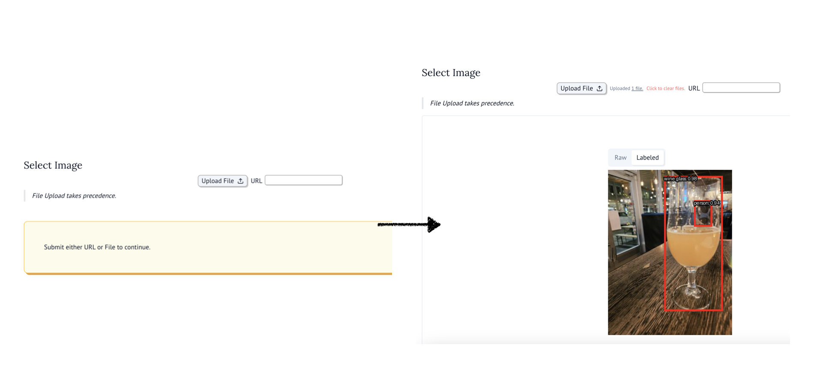

Transformers.js is an ambitious project by HuggingFace to bring transformers to Web/JS and simplify inference on-device, running onnxruntime-web under-the-hood.
I’ve written blogs and apps with onnxruntime-web1, and I must say - I’m a sucker for efficient on-device inference!

onnxruntime-web
onnxruntime-web helps run models efficiently directly in your browser (JS) through the default backend WASM (cpu).
Additionally you can accelerate inference via GPU/NPU when swapping backend to either WebGL, WebGPU, or WebNN. I think this is really cool as we can now develop Progressive Web Apps (PWA) that accelerate their inference using a smartphones NPU - crazy!
ONNX Runtime also supports many other ways to run inference, e.g. JVM, .NET, Python, and C++.
And recently I learned about a thin wrapper around transformers.js, namely Transformers.js.py that proxies the API to Pyodide2.
Right below üëá I share how to run Object Detection.
How to: Object Detection Inference
infer.py
1from transformers_js_py import import_transformers_js, as_url
transformers = await import_transformers_js()
pipeline = transformers.pipeline
img = "<URL_OR_PATH_TO_AN_IMAGE>"
2pipe = await pipeline("object-detection")
3pred = await pipe(as_url(img))
print(pred) # list of predictions [{"score": float, "label": str, "box": dict[str, int]}, ...]- 1
-
Import library and “import”
pipeline - 2
-
Set up
pipelineobject, downloading model and making things ready to run - 3
-
Run inference.
as_urlconverts local/virtual files to a URL aspipelineobject requires URL’s that can be opened in the JS context.
I share how to customize the inference in Section 3 and a full-fledged WebApp with on-device inference using Marimo in Section 4
Why transformer.js.py + pyodide
There’s a good question here: why not run JS directly?
I don’t have a great answer, it’s all about trade-offs.
JS enables “native” usage which likely works better in real-time applications, as it runs JS->WASM rather than WASM->JS->WASM.
What JS doesn‚Äôt have is a robust data science ecosystem, unlike Python. ‚ÄúMerging‚Äù the two through Pyodide makes sense, and further its fun! ü§ì
Why JS?
- Pros:
- Faster / Realtime (as no WASM/JS communication)
- Native integration in webapps
- Cons:
- Not great data science tools
Why Python (Pyodide)?
- Pros:
- Great ecosystem (PIL.Image, numpy, altair, polars, …)
- Familarity
- Simpler PoC UI tools available (marimo, streamlit, solara, jupyterlite)
- Cons:
- Overhead moving data from Pyodide (WASM) to JS
- Hard to make realtime because of this
- Overhead moving data from Pyodide (WASM) to JS
Inference Customization
To select a specific model define the name as you build the pipeline.
infer_options.py
- 1
- Find all available tasks and their linked model-list here.
- 2
- Find all available Object Detection models here.
- 3
- Find all options here and here.
Simple right?
I’m continuously impressed by how far we’ve gotten. On-device inference, even with acceleration, is a painless thing today. If you want simplicity I recommend web and otherwise to use the mobile/native releases or alternatively LiteRT (previously TFLite).
What’s left?
Improving the JS data science ecosystem, for now I prefer Pyodide because of the vast ecosystem. Though I’d like to congratulate transformers.js at successfully making inference simple for people who simply wants a blackbox. Personally I usually want to work with data before/after inference which requires better tools that Pyodide provides.
WASM App using Marimo
If you’ve read my blog you know I recently discovered Marimo, and as always with new tools you try to use them, perhaps a bit too much, whenever you can.
I thought I’d give it a shot to integrate with transformer.js.py and run the inference fully on-device with WASM.
It’s certainly not real-time, but ~5 seconds per image is OK I’d say.
All in all I think this approach is quite neat and could provide very useful, especially for Proof-of-Concepts or Internal Tooling.
Run the app yourself via my marimo.io WASM notebook. Show the code by clicking the three dots in top-right corner.
Thanks for this time,
Hampus Londögård